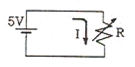
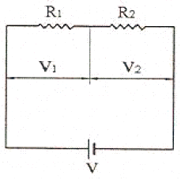
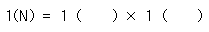
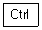
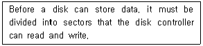
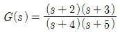
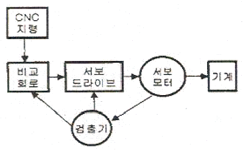
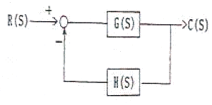
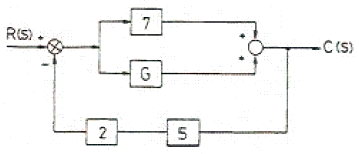
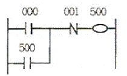

생산자동화산업기사 (2007-03-04 기출문제)
1과목: 기계가공법 및 안전관리
1. 모(毛), 연직물, 펠트 등을 여러 장 겹쳐서 적당한 두께의 원판을 만든 다음 이것을 회전시키고 여기에 미세한 연삭임자가 혼합된 윤활제를 사용하여 공작물의 표면을 매끈하고 광택나게 하는 것은?
- 프레싱 가공
- 버핑
- 배럴가공
- 쿨링
(정답률: 알수없음)

2. 해머 작업시 안전사항으로 적당하지 않은 것은?
- 장갑을 끼고 작업한다.
- 자기 체중에 비례해서 선택한다.
- 처음에는 서서히 타격을 가한다.
- 자기 역량에 맞는 것을 선택해서 사용한다.
(정답률: 알수없음)
3. 삼침법에 의해 수나사의 유효지름을 측정할 때, 사용되는 마이크로 미터는?
- 포인트 마이크로 미터
- 외측 마이크로 미터
- V-앤빌 마이크로 미터
- 그루브 마이크로 미터
(정답률: 알수없음)
4. 회전하는 상자에 공작물과 숫돌입자, 공작액, 컴파운드 등을 함께 넣어 공작물이 입자와 충돌하는 동안에 그 표면의 요철()을 제거하여 매끈한 가공면을 얻는 것은?
- 숏피닝
- 수퍼피니싱
- 버니싱
- 텀블링
(정답률: 알수없음)
5. 호빙 머신의 이송에 대한 설명 중 맞는 것은?
- 테이블 1회전 할 동안의 호브의 회전수
- 호빙 머신의 효율
- 기어 소재의 1회전에 대하여 호브의 피드
- 호브 1회전에 대하여 기어의 전진 잇수
(정답률: 알수없음)
6. 다음 중 급속 귀환장치가 있는 기계는?
- 세이퍼
- 지그보링머신
- 밀링
- 호빙머신
(정답률: 알수없음)
7. 필링가공 작업중에 갑자기 정전되었을 때, 안전사항으로 가장 거리가 먼 것은?
- 절삭공구는 공작물에서 떼어 놓는다.
- 기계에 부착된 스위치를 즉시 끈다.
- 경우에 따라 메인(main)스위치도 끈다.
- 측정기를 정리한다.
(정답률: 알수없음)
8. 총형커터에 의한 방법으로 치형을 절삭할 때 사용하는 밀링커터는?
- 헬리컬 밀링커터
- 하이포이드 밀링커터
- 인벌류우트 밀링커터
- 베벨 밀링커터
(정답률: 알수없음)
9. 수직 밀링머신에서 가공물의 흠과 좁은 평면, 윤곽가공, 구멍가공 등에는 일반적으로 다음 중 어떤 절삭 공구를 주로 많이 사용 하는가?
- 엔드밀
- 기어 커터
- 앵글 커터
- 총형 커터
(정답률: 알수없음)
10. 선반바이트를 구조에 따라 분류할 때 생크에서 날(인선)부분에만 초경합금이나 용접이 가능한 바이트용 재질을 용접하여 사용하는 것은?
- 팀 바이트
- 세라믹 바이트
- 단체 바이트
- 클램프 바이트
(정답률: 알수없음)
11. 삼각함수에 의하여 각도를 길이로 계산하여 간접적으로 각도를 구하는 방법으로 블록 게이지와 함께 사용하여 구하는 측정기는?
- 오토클리메이터
- 탄젠트 바
- 베벨프로트랙터
- 콤비네이션 세트
(정답률: 알수없음)
12. 대형의 공작물이나 불규칙한 가공물을 가공하기 편리하도록 척을 지면 위에 수직으로 설치하여 가공물의 장착이나 탈착이 편리하며 공구이송방향이 보통선반과 다른 선반은?
- 차륜선반
- 수직선반
- 공구선반
- 모방선반
(정답률: 알수없음)
13. 연삭숫돌의 연삭조건과 입도(grain size)의 관계를 옳게 표시한 것은?
- 연하고 연성이 있는 재료의 연삭: 고운입도
- 다듬질 연삭 또는 공구의 연삭: 고운입도
- 경도가 높고 메진 일감의 연삭: 거친입도
- 숫돌과 일감의 접촉면이 작은 때: 거친입도
(정답률: 알수없음)
14. 센터리스 연삭기에서 통과이송법으로 가공시 조정숫돌 바퀴의 바깥 지름이 400mm, 조정 숫돌바퀴의 회전수가 30rpm, 경사각이 4°일 때, 가공물의 이송 속도는 약 몇 m/min인가?
- 0.18
- 2.63
- 11.79
- 37.61
(정답률: 알수없음)
15. 드릴 각부의 명칭에 드릴의 흠을 따라서 만들어진 좁은 날이며, 드릴을 안내하는 역할을 하는 것은?
- 마진(margin)
- 랜드(land)
- 시닝(thinning)
- 탱(tang)
(정답률: 알수없음)
16. 절삭공구 재료의 구비조건으로 틀린 것은?
- 고온경도가 낮아야 한다.
- 내마멸성 및 강인성이 필요하다.
- 공구와 칩 사이의 마찰계수가 작아야 한다.
- 성형이 용이하고 가격이 저렴해야 한다.
(정답률: 알수없음)
17. 선반작업 안전수칙으로 틀린 것은?
- 회전하는 공작물을 공구로 정지시킨다.
- 바이트는 가능한 짧고 단단하게 고정한다.
- 장갑, 반지 등은 착용하지 않도록 한다.
- 선바에서 드릴작업시 구멍이 거의 끝날 때에는 이송을 천천히 한다.
(정답률: 알수없음)
18. 센터나 척을 사용하지 않고 일감의 바깥원통면을 연삭하는 센터리스 연삭기의 장점이 아닌 것은?
- 연속작업을 할 수 있어 대량 생산에 적합하다.
- 긴 축 재료의 연삭이 가능하다.
- 연삭여유가 작아도 된다.
- 대형 증량물도 연삭이 잘 된다.
(정답률: 알수없음)
19. 선반에서 맨드릴(mandrel)을 사용하는 가장 큰 이유는?
- 구멍 가공만이 꼭 필요하기 때문
- 구멍이 있는 공작물에 센터작업이 필요하기 때문
- 구멍과 외경이 동심원이고 직각단면이 필요하기 때문
- 척에 공작물을 고정하기 어렵기 때문
(정답률: 알수없음)
20. 드릴의 속도 V(m/min), 지름 d(mm)일 때, 드릴의 회전수 n(rpm)을 구하는 식은?
- n=1000/(πdV)
- n=(πdV)/1000
- n=(1000V)/(πd)
- n=(πd(/(1000V)
(정답률: 알수없음)
2과목: 기계제도 및 기초공학
21. 온도가 일정한 경우 모든 기체의 압력[P]과 부피[V]사이에는 “PV=일정”관계가 성립되는 법칙은?
- 둘턴의 분압법칙
- 연속의 법칙
- 보일의 법칙
- 뉴튼 법칙
(정답률: 알수없음)
22. 힘을 전달하기 위한 기계요소가 아닌 것은?
- 키
- 베어링
- 기어
- V 벨트
(정답률: 알수없음)
23. 그림과 같이 5V의 전원을 사용하는 직류회로에서 가변저항이 1Ω이 되면 흐르는 전류는?

- 5A
- OA
- 12A
- ∞
(정답률: 알수없음)
24. 길이가 일정한 막대에 좌측 끝단에는 7kgf, 우측 끝단에는 3kgf인 물체를 올려놓았을 때 수평을 유지하기 위한 받침대의 좌측과 우측의 길이 비율은?
- 7:3
- 3:7
- 5:5
- 4:6
(정답률: 알수없음)
25. 자동차 안의 담배용 라이터의 저항이 1.2[Ω]이다. 이 차의 전기장치들은 12[V]로 작동한다. 라이터에 흐르는 전류[A]는 얼마인가?
- 10[A]
- 15[A]
- 20[A]
- 25[A]
(정답률: 알수없음)
26. 그림과 같이 R1=20Ω, R2=30Ω의 저항값이 직렬로 연결되어 있을 때 설명 중 옳은 것은?

- 20Ω의 저항보다 30Ω의 저항에 더 센 전류가 흐른다.
- 30Ω의 저항보다 20Ω의 저항에 더 센 전류가 흐른다.
- 각 저항에 걸리는 전압 V1, V2의 비는 V1:V2는 3:2이다.
- 두 저항의 합성 저항은 50Ω이다.
(정답률: 알수없음)
27. 하중에 의하여 물체 내부에 발생하는 저항력을 무엇이라고 하는가?
- 동력
- 하중
- 변형률
- 응력
(정답률: 알수없음)
28. 이송속도가 0.2cm/sec인 유압실린더가 2분 동안 이동한 거리는 몇 m 인가?
- 24m
- 60m
- 0.24m
- 0.6m
(정답률: 알수없음)
29. 물체에 작용하는 힘의 3요소에 속하지 않는 것은?
- 힘의 크기
- 힘의 모멘트
- 힘의 방향
- 힘의 작용점
(정답률: 알수없음)
30. 다음 괄호 안에 들어갈 알맞은 단위를 순서대로 쓴 것은?

- kg, m
- kg, m/s2
- m.s
- m. 1/s
(정답률: 알수없음)
31. “윈도 98”와 제어판에서 시동 디스크를 만들려면 어떤 항목을 선택하여야 되는가?
- 시스템
- 사용자
- 내게 필요한 옵션
- 프로그램 추가/제거
(정답률: 알수없음)
32. 온라인 실시간 시스템의 조회 방식에 적합한 업무는?
- 객관식 채점업무
- 좌석 예약 업무
- 봉급 계산 업무
- 성적 처리 업무
(정답률: 알수없음)
33. “윈도 98” 환경에서 여러 개의 프로그램을 동시에 작업 하는 것을 무엇이라 하는가?
- 멀티 유저
- 멀티 태스킹
- 멀티 스케줄링
- 멀티 컨트롤
(정답률: 알수없음)
34. 윈도 98°의 CLIP BOARD를 사용하기 위한 단축키를 설명한 것이다. 잘못 짝지어진 것은?
 + C : 선택 영역을 Clip Board로 복사
+ C : 선택 영역을 Clip Board로 복사 + X : 선택 영역을 Clip Board로 이동
+ X : 선택 영역을 Clip Board로 이동
+ D : 선택 영역을 Clip Board로부터 삭제 + V : Clip Board에 복사된 내용을 붙여넣기
+ V : Clip Board에 복사된 내용을 붙여넣기
(정답률: 알수없음)
35. 운영체제(Operating System)에 해당 되지 않는 것은?
- DOS
- UNIX
- WINDOWS
- PL/1
(정답률: 알수없음)
36. 다음의 설명이 가장 적합한 것은?

- Booting
- Backup
- File store
- Formatting
(정답률: 알수없음)
37. 컴퓨터 시스템의 성능을 최대한 발휘할 수 있도록 효율성을 높이고, 사용자가 컴퓨터를 편리하게 이용할 수 있도록 편의를 제공하는 프로그램의 집합체는?
- 운영체제
- 어셈블러
- 컴파일러
- 인터프리터
(정답률: 알수없음)
38. 다중처리시스템에서 하나의 프로세서가 CPU를 독점하는 것을 방지하기 위하여 각각 하나의 시간슬롯을 할당하여 동작하도록 하는 시스템은?
- 시분할처리 시스템
- 실시간처리 시스템
- 분산처리 시스템
- 병렬처리 시스템
(정답률: 알수없음)
39. 업무처리를 실시간 시스템(real-time system)으로 처리 할 필요가 없는 것은?
- 적의 공중 공격에 대비하여 동시에 여러 지점을 감시하는 시스템
- 가솔린 정련에서 온도가 너무 높이 올라가는 경우 폭발을 방지하기 위해 조치를 취하는 시스템
- 고객명단 자료를 월 단위로 묶어 처리하는 시스템
- 교통관리, 비행조정 등과 같은 외부 상태에 대한 신속한 제어를 목적으로 하는 시스템
(정답률: 알수없음)
40. 운영체제를 제어 프로그램(control program)과 처리 프로그램(processing program)으로 분류했을 때, 제어 프로그램에 해당하지 않는 것은?
- 감시 프로그램(supervisor program)
- 데이터 관리 프로그램(data management program)
- 문제 프로그램(problem program)
- 작업 제어 프로그램(job control program)
(정답률: 알수없음)
3과목: 자동제어
41. 입력 가능한 전압의 범위가 0~10(V)이고, 이 전압이 0~4000의 디지털 값으로 변환되는 PLC의 A/D 변환 장치가 있다. 여기에 6V의 전압이 입력되었을 때 디지털 변환 값은?
- 1600
- 2000
- 2400
- 2800
(정답률: 알수없음)
42. 다음 센서 중에서 직접 디지털신호를 출력으로 하는 것은?
- 엔코더
- 포텐쇼미터
- 스트레인게이지
- 차동트랜스
(정답률: 알수없음)
43. 다음 중 자동제어를 적용한 경우의 특징이 아닌 것은?
- 원자재비 증가
- 제품 품질의 균일화
- 연속작업
- 신속한 작업
(정답률: 알수없음)
44. 단위 계단입력에 대한 제어 시스템의 과도응답 특성을 표시하는 것 중에서 응답이 처음으로 최종 값의 반이 되는데 걸리는 시간을 무엇이라고 하는가?
- 지연 시간
- 상승 시간
- 봉우리 시간
- 정착 시간
(정답률: 알수없음)
45.

일 때 극값은?- -2, -3
- -3, -4
- -2, -5
- -4, -5
(정답률: 알수없음)
46. 다음 그림에서 서보기구의 제어방식으로 맞는 것은?

- 개방회로 방식
- 반폐쇄회로 방식
- 폐쇄회로 방식
- 하이브리드 방식
(정답률: 알수없음)
47. 12비트 0~5V, D/A 변환기의 디지털 값이 16진수로 800일 때 출력전압은?
- 3V
- 2.5V
- 2V
- 1.5V
(정답률: 알수없음)
48. 10진법의 수 0에서 9를 2진법으로 표현하기 위한 최소 자릿는?
- 2
- 4
- 6
- 8
(정답률: 알수없음)
49. 그림과 같은 블록선도의 전달함수는?

- G(S)/[1+G(S)H(S)]
- G(S)/[1-G(S)H(S)]
- G(S)H(S)/[1+G(S)H(S)]
- G(S)H(S)/[1-G(S)H(S)]
(정답률: 알수없음)
50. 자동 제어계를 제어량의 성질에 따라 분류할 때 서보기구에서의 제어량은?
- 수위, PH
- 온도, 압력
- 위치, 각도
- 속도, 전기량
(정답률: 알수없음)
51. 다음 중 공정제어에 속하지 않는 것은?
- 수치제어
- 온도제어
- 압력제어
- 유량제어
(정답률: 알수없음)
52. 전동기의 정ㆍ역전 회로 등에서 다른 계전기의 동시동작을 금지 시키는 회로는?
- 자기유지회로
- 지연동작회로
- 인터록 회로
- ADN 회로
(정답률: 알수없음)
53. 그림에서 R(s)=101, C(s)=10일 때 전달함수 G의 값은?

- 3
- 6
- 9
- 12
(정답률: 알수없음)
54. 다음 그림과 같은 회로 명칭은?

- 시간지연회로
- 자기유지회로
- 쉬프트 회로
- 인터록 회로
(정답률: 알수없음)
55. 주파수 전달함수가 G(jω)=1+j1일 경우 위상은?
- 0°
- 45°
- 90°
- 180°
(정답률: 알수없음)
56. 프로그램의 문제점을 찾아내서 수정하는 작업을 무엇이라 하는가?
- 어셈블링
- 디버깅
- 컴파일링
- 인터프리팅
(정답률: 알수없음)
57. 전기식 조작기는 전기적 변화량을 기계적 변화량으로 변환하여 제어대상을 조작하는 장치이다. 전기식 조작기에 속하지 않는 것은?
- 밸브 포지셔너
- 조작용 전동기
- 전자밸브
- 전동밸브
(정답률: 알수없음)
58. PLC의 입력 요소가 아닌 것은?
- 슬레노이드 밸브
- 푸쉬버튼 스위치
- 광전 스위치
- 리밋 스위치
(정답률: 알수없음)
59. 다음 중 서보공압장치의 특징에 대한 설명으로 적합하지 않은 것은?
- 실린더 이동 속도가 빠르다.
- 표즌품 실린더를 사용하기 때문에 행정거리의 조절이 어렵다.
- 높은 위치 정밀도를 구현할 수 있다.
- 구동장치가 견고하다.
(정답률: 알수없음)
60. PLC 시스템에서 사랑의 두뇌에 해당하며 연산제어기능을 수행하는 부분은?
- RAM 과 ROM
- CPU
- INTERFACE
- 키보드와 모니터
(정답률: 알수없음)
4과목: 메카트로닉스
61. 파장이 가시광선보다 길고 전파보다 짧은 전자파의 일종으로 자연계에 존재하는 모든 물질은 그것이 가지고 잇는 온도에 따라서 이것을 방출하는데, 이것을 검출하여 이 것으로부터 온도를 구하는 비접촉식 센서로서 가전제품의 리모콘 등에 사용되는 센서는?
- 적외선 센서
- 자외선 센서
- 자기 센서
- 초음파 센서
(정답률: 알수없음)
62. 다음 신호유형 중 시간은 풀연속이고 정보는 연속인 신호는?
- 아날로그 신호
- 디지털 신호
- 이산시간 신호
- 연속 신호
(정답률: 알수없음)
63. 반경류식 공압 피스톤 모터의 회전력과 관계가 없는 것은?
- 공기의 압력
- 로드의 직경
- 피스톤의 수
- 피스톤 행정거리
(정답률: 알수없음)
64. 복등 실린더를 성형작업에 사용하려면 추력에 제한을 받게되므로 큰 속도에너지를 얻기 위해 설계된 실린더는?
- 충격 실린더
- 다위치 제어 실린더
- 탠덤 실린더
- 케이블 실린더
(정답률: 알수없음)
65. 2개의 복동 실린더가 직렬로 하나의 유니트에 조합되어 가압하면 약 2배의 추력을 얻을 수 있는 것은?
- 격판 실린더
- 탠덤 실린더
- 충격 실린더
- 다위치 제어 실린더
(정답률: 알수없음)
66. 자동화 시스템의 신뢰성을 나타내는 척도로 적합하지 않은 것은?
- 고장율
- 평균 고장 시간
- 평균 고장 간격 시간
- 평균 고장 수리 시간
(정답률: 알수없음)
67. 다음 EPROM에 대한 설명으로 잘못된 것은?
- 읽기와 쓰기가 가능하다.
- 단 한번 프로그램할 수 있다.
- 내용을 기록할 때는 롬 라이터(ROM writer)를 이용한다.
- 한번 기억된 내용은 전원이 차단되어도 지워지지 않는다.
(정답률: 알수없음)
68. 프로그램 메모리에 저장되는 것은?
- 기계어 코드의 프로그램
- 니모닉 언어의 프로그램
- 대화형 언어의 프로그램
- 스테이트먼트 리스트 프로그램
(정답률: 알수없음)
69. 다음 작어용 매체로 사용되는 유압, 공압, 전기에너지의 특징을 설명한 것 중 맞는 것은?
- 작업요소의 운동속도가 빠른 것은 공압이다.
- 유압의 압력전달 속도는 10m/sec이내이다.
- 전기에너지를 이용한 직선운동은 불가능하다.
- 에너지의 저장성이 가장 좋은 것은 유압이다.
(정답률: 알수없음)
70. 제품의 품질을 균일화하고 생산성을 향상시킬 수 있는 자동화의 장점이 아닌 것은?
- 이익의 극대화
- 인건비 절감
- 생산 탄력성 증가
- 신뢰성 향상
(정답률: 알수없음)
71. 센서의 신호처리시 문제점이 아닌 것은?
- 잡음
- 비선형성
- 시간 지연
- 수명 단축
(정답률: 알수없음)
72. 작동유의 과열로 온도가 상승되고 있다. 그 원인이 아닌 것은?
- 작동유의 점성이 높음
- 작동압력이 낮음
- 펌프 내의 마찰증대
- 장시간 고압에서 운전
(정답률: 알수없음)
73. 산업현장에서 외부기계나 장치에 직접 연결하여 사음되는 PLC의 입ㆍ출력부가 갖추어야 할 기본 조건이 아닌 것은?
- 외부기기와 전기적 규격이 일치할 것
- 입ㆍ출력부 상태를 감시할 수 있어야 할 것
- 입ㆍ출력부 교환시 배선을 분리할 것
- 외부기기로부터 잡음을 억제할 것
(정답률: 알수없음)
74. 제어량을 목표값으로 유지하려면 조작량이 너무 크거나 작아 진동이 생길 수 있으므로, 실제로는 히스테리시스를 가지며 정밀도가 높은 공정 제어에는 사용이 곤란한 제어는?
- 비례 제어
- 온/오프 제어
- 비례미분 제어
- 비례 적분 제어
(정답률: 알수없음)
75. 다음의 제어방식 중 프로그램 제어 방식들로 구성된 것은?
- 시간에 따른 제어, 조합 제어, 파일럿 제어
- 파일럿 제어, 시퀀스 제어, 메모리 제어
- 조합 제어, 시간에 따른 제어, 시퀀스 제어
- 시퀀스 제어, 조합 제어, 파일럿 제어
(정답률: 알수없음)
76. 응압 시스템에 있어서 윤활유 등과 섞여 에멀션 상태나 수지 상태가 되어 밸브의 동작을 가로막을 우려가 되는 고장은?
- 수분으로 인한 고장
- 이물질로 인한 고장
- 배관 물량에 의한 공기의 유출
- 공급 유량 부족으로 인한 고장
(정답률: 알수없음)
77. 유압시스템에서 토출유량 감소의 원인으로 적합한 것은?
- 펌프의 흡입불량, 내부 누설의 감소, 공기의 침입
- 탱크내 유면이 낮음, 내부 누설의 증대, 펌프의 흡입불량
- 구동 동력 부족, 과부하 작동, 고압운전
- 펌프의 성능 저하, 고압운전, 외부 누설 증대
(정답률: 알수없음)
78. 다음의 메모리의 단위 중 가장 큰 것은?
- Bit
- Mbyte
- Kbyte
- Gbyte
(정답률: 알수없음)
79. 자동차를 공장 자동화와 정보 자동화로 구분할 때 적용 분야가 정보 자동화인 것은?
- ROM
- CAD
- Robot
- 자동운반
(정답률: 알수없음)
80. 열전쌍(thermo couple)의 사용온도 범위에 따라 구분한 기호 중 맞지 않은 것은? (단, ( )속의 온도는 최고온도한계를 표시함)
- 저온용(350℃ 내외) : T
- 중온용(800℃ 내외) : E, J
- 고온용(1200℃ 내외) : K
- 초고온용(1600℃ 내외) : C, R
(정답률: 알수없음)